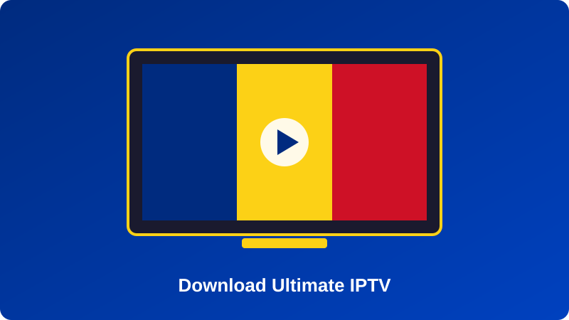
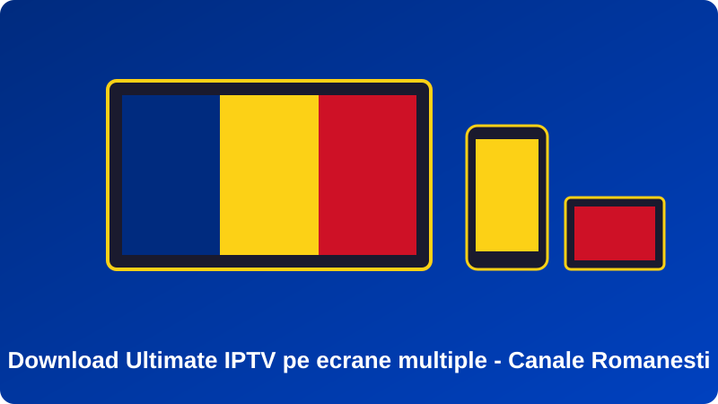

Daca ai cautat download ultimate iptv, probabil vrei sa transformi televizorul, telefonul sau tableta intr-un loc unde vezi canalele romanesti preferate, oriunde te-ai afla. Intrebarea pare simpla, dar raspunsul are mai multe parti: ce aplicatie descarci, de unde o descarci in siguranta, cum o configurezi si, mai ales, de unde primesti canalele. Multi utilizatori fac download ultimate iptv, instaleaza programul si apoi descopera ca ecranul ramane gol.
Pe internet exista fisiere APK, liste si pagini care promit "totul gratuit". In practica, unele sunt nesigure, iar altele functioneaza doar cateva zile. De aceea am scris un ghid complet pentru publicul din Romania si din diaspora: cum faci download ultimate iptv fara riscuri, ce pasi urmezi pe fiecare aparat si cum eviti greselile obisnuite.
Echipa Romania IPTV ajuta zilnic familii din tara si din strainatate sa isi porneasca televiziunea prin internet. Sfaturile de mai jos vin din situatii reale, iar la final vezi cum primesti un test gratuit pe WhatsApp, inainte sa platesti orice.

Cuprins
- Ce este si ce descarci cand faci download ultimate iptv
- De unde faci download ultimate iptv in siguranta
- Download ultimate iptv pe Smart TV, Android box, telefon si PC
- Configurare pas cu pas dupa download ultimate iptv
- Ce canale romanesti ar trebui sa primesti
- Greseli frecvente cand faci download ultimate iptv
- Probleme dupa instalare si solutii rapide
- Download ultimate iptv pentru diaspora romaneasca
- Cum alegi furnizorul potrivit
- Intrebari frecvente
- Concluzie
Ce este si ce descarci cand faci download ultimate iptv
Cand cineva cauta download ultimate iptv, de obicei se refera la un player pentru televiziune prin internet, cunoscut sub numele Ultimate IPTV. Important de stiut: un player nu este un serviciu complet. El este doar aplicatia care reda imaginea, asa cum un televizor nou este inutil fara semnal. Fara date de la un furnizor, ecranul ramane gol.
Playerul: aplicatia care reda canalele
Playerul este programul pe care il instalezi pe televizor, telefon sau box. Dupa ce faci download ultimate iptv, primesti o interfata curata in care poti introduce un link M3U, un cod Xtream sau adresa unui portal. In sine, aplicatia nu contine niciun canal. Pentru o comparatie cu alte aplicatii, citeste si ghidul nostru despre download iptv.
Lista de canale si contul de la furnizor
Canalele vin de la furnizor. Un download ultimate iptv fara aceste date nu iti arata nimic. De aceea, inainte sa cauti aplicatii, intreaba-te mai intai cine iti ofera canalele romanesti si cine te ajuta daca apar probleme. Aplicatia este jumatate din solutie, iar furnizorul este cealalta jumatate.
Ce nu face un player
Un player nu iti garanteaza calitatea imaginii, nu repara o conexiune slaba si nu iti ofera drepturi de difuzare. Acestea tin de furnizor si de reteaua ta de internet. Retine asta cand compari aplicatii: diferentele reale apar in stabilitatea listei, nu in culoarea butoanelor.
De unde faci download ultimate iptv in siguranta
Sursa din care descarci conteaza mai mult decat aplicatia. Un fisier luat de pe un site necunoscut poate contine reclame agresive, programe nedorite sau coduri care iti citesc datele. Cateva reguli simple fac diferenta.
Magazinele oficiale: prima alegere
Pe Android TV, Google TV, telefoane si tablete foloseste Google Play. Pe iPhone, iPad si Apple TV foloseste App Store. Pe Firestick ai magazinul Amazon. Daca playerul este disponibil intr-un magazin oficial, acolo trebuie sa faci download ultimate iptv, nu de pe un link primit pe un grup sau pe un forum.
Fisiere APK: cand sunt acceptabile
Unele playere pentru Android se distribuie si ca fisier APK. Descarca un APK doar de pe pagina oficiala a dezvoltatorului, nu de pe site-uri cu zeci de butoane "Download". Dupa instalare, dezactiveaza din nou optiunea "surse necunoscute". Daca vrei sa intelegi mai bine cum functioneaza fisierele de acest tip, vezi si iptv app download.
Semne ca un download este riscant
- site-ul te trimite prin mai multe pagini de reclame inainte de fisier;
- fisierul are extensia .exe pentru un televizor sau un telefon;
- ti se cer permisiuni fara legatura cu televiziunea, cum ar fi contactele sau SMS-urile;
- promite "toate canalele din lume, gratis, pe viata".
Download ultimate iptv pe Smart TV, Android box, telefon si PC
Pasii difera putin de la aparat la aparat, dar logica ramane aceeasi: instalezi playerul, adaugi datele furnizorului si astepti incarcarea listei de canale.
Pe Smart TV Samsung sau LG
Deschide magazinul de aplicatii al televizorului si cauta playerul. Daca nu il gasesti, nu pierde timp cu solutii improvizate: un box Android conectat prin HDMI este mai stabil si mai usor de actualizat.
Pe Android TV box si Firestick
Pe un box Android deschizi Google Play, iar pe Firestick folosesti magazinul Amazon. Dupa download ultimate iptv, introduci linkul sau codul primit de la furnizor. In mai putin de cinci minute, lista cu canale romanesti este incarcata.
Pe telefon si tableta
Pe telefon, procesul este cel mai rapid: magazinul oficial, instalare, adaugare cont. Este solutia ideala pentru cei din diaspora care vor sa urmareasca stirile din tara in pauza de la serviciu sau in drum spre casa.
Pe PC sau laptop
Pe Windows, Mac sau Linux poti folosi un player compatibil, descarcat doar de pe site-ul oficial. Pentru alte exemple de playere si aplicatii, compara cu digital iptv.
Configurare pas cu pas dupa download ultimate iptv
Dupa ce ai terminat download ultimate iptv, urmeaza configurarea. Majoritatea problemelor apar aici, nu la descarcare.
Pasii de baza
- Deschide aplicatia si accepta doar permisiunile strict necesare.
- Alege tipul de conectare: link M3U, cod Xtream sau portal.
- Introdu datele primite de la furnizor, fara spatii in plus.
- Asteapta incarcarea listei si a ghidului TV (EPG).
- Salveaza canalele preferate pentru acces rapid.
Ghidul TV (EPG) si ordinea canalelor
Daca vrei sa vezi programul emisiunilor, adauga si sursa EPG. Multi utilizatori uita acest pas si cred ca aplicatia este defecta. Ordoneaza apoi canalele pe categorii: stiri, filme, sport, copii, muzica. O lista bine organizata te scuteste de cautari inutile in fiecare seara.
Setari de calitate
Alege decodarea hardware daca aparatul o permite si seteaza bufferul la o valoare medie. Daca reteaua este mai slaba, alege HD in loc de 4K. Astfel imaginea ramane fluida, mai ales in timpul meciurilor.
Ce canale romanesti ar trebui sa primesti
Dupa download ultimate iptv si configurare, valoarea reala o dau canalele. Un serviciu bun pentru publicul din Romania si din diaspora ar trebui sa includa categoriile de mai jos.
| Categorie | Exemple de canale | De ce conteaza |
|---|---|---|
| Generaliste | Pro TV, Antena 1, Kanal D, Prima TV | seriale, emisiuni, divertisment de familie |
| Stiri | Digi24, Antena 3 CNN, Realitatea Plus | informatii din tara, in direct |
| Sport | Digi Sport, Prima Sport, Look Sport | fotbal, tenis, handbal |
| Filme | HBO, Cinemax, AXN, TV1000 | filme si seriale premium |
| Copii | Disney Channel, Cartoon Network, Minimax | desene in limba romana |
Canale in HD si 4K
Verifica daca lista contine versiuni HD si 4K ale canalelor principale. Diferenta se vede imediat pe un televizor mare, mai ales la sport si filme.
Reluari si video la cerere
Unele servicii ofera si catalog de filme sau reluari ale emisiunilor. Este util cand programul tau nu se potriveste cu orele de difuzare, situatie frecventa la romanii care lucreaza in ture in strainatate.
Greseli frecvente cand faci download ultimate iptv
Majoritatea utilizatorilor cu o experienta proasta au facut aceleasi greseli. Le poti evita foarte usor.
Liste gratuite si instabile
Listele gratuite de pe internet se blocheaza des, nu au suport si dispar fara avertisment. Pentru o analiza completa, citeste pagina noastra despre iptv romania, unde explicam diferenta dintre un serviciu stabil si o lista oarecare.
Aplicatii false in magazine
Uneori apar aplicatii cu nume asemanatoare celor cunoscute. Verifica numele dezvoltatorului, numarul de descarcari si recenziile inainte de instalare.
Internet insuficient
Cel mai des, blocajele nu vin de la aplicatie, ci de la retea. Un test de viteza facut seara iti arata daca ai suficient pentru canalele HD. Compara cu alternative internationale, de exemplu greek iptv sau tilaa iptv, ca sa vezi ce standard de calitate poti cere.
Probleme dupa instalare si solutii rapide
Chiar si dupa un download ultimate iptv corect, pot aparea mici probleme. Cele mai multe se rezolva in cateva minute, fara tehnician.
Imaginea se blocheaza
Reporneste routerul, inchide aplicatiile din fundal si verifica daca altcineva descarca fisiere mari in aceeasi retea. Daca folosesti Wi-Fi, apropie aparatul de router sau treci pe cablu. Un cablu Ethernet rezolva aproape toate blocajele de seara.
Eroare de conectare
Verifica daca ai copiat corect linkul sau codul primit de la furnizor. O litera lipsa sau un spatiu in plus blocheaza lista. Daca eroarea persista, scrie echipei de suport si trimite o captura de ecran.
Sunetul nu este sincronizat
Schimba decodorul din setarile playerului, din hardware in software sau invers. Pe aparatele mai vechi, aceasta setare corecteaza decalajul dintre imagine si sunet.
Aplicatia se inchide singura
Sterge memoria cache a aplicatiei si elibereaza spatiu pe aparat. Daca problema ramane, reinstaleaza playerul din magazinul oficial si adauga din nou datele furnizorului.
Download ultimate iptv pentru diaspora romaneasca
Romanii din Germania, Italia, Spania, Marea Britanie sau Belgia au o nevoie speciala: sa vada canalele de acasa fara antena si fara cablu romanesc. Aici download ultimate iptv devine o solutie practica, deoarece functioneaza oriunde ai internet.
Functioneaza in orice tara?
Da. Serviciul depinde de conexiunea la internet, nu de adresa. Cu un abonament potrivit, vezi aceleasi canale la Bruxelles, la Madrid sau la Bucuresti. Echipa noastra din Belgia raspunde pe WhatsApp in limba romana si ajuta la configurare. Daca ai folosit si alte aplicatii, vezi comparatia cu dotto iptv.
Cate ecrane poti folosi
Familiile cer adesea acces pe mai multe ecrane: televizorul din sufragerie, telefonul si tableta copiilor. Intreaba intotdeauna cate conexiuni simultane sunt incluse in abonament.
Cum alegi furnizorul potrivit
Dupa download ultimate iptv, aplicatia este pregatita, dar fara furnizor nu ai ce urmari. Romania IPTV a fost creat pentru publicul romanesc: canale locale, suport in limba romana si test gratuit inainte de abonament.
Lista de verificare
- test gratuit, fara card;
- canale romanesti clare, nu doar promisiuni;
- suport rapid pe WhatsApp;
- pret transparent, fara costuri ascunse;
- compatibilitate cu aparatul tau.
Cum testezi seara, in orele de varf
Cere testul si deschide canalele de stiri, filme si sport intre 19:00 si 23:00. Daca imaginea ramane fluida atunci, serviciul este in regula. Alege abonamentul abia dupa aceasta proba. Pentru alte idei despre aplicatii si cum se compara, citeste si digi iptv romania.

Intrebari frecvente despre download ultimate iptv
Ce inseamna download ultimate iptv?
Inseamna descarcarea unui player de televiziune prin internet cu numele Ultimate IPTV. Aplicatia afiseaza canalele, dar acestea vin de la un furnizor, prin link M3U, cod Xtream sau portal.
Este legal sa fac download ultimate iptv?
Descarcarea unui player este legala. Important este ca serviciul pe care il adaugi in el sa vina de la un furnizor care detine drepturile de difuzare sau acorduri valide.
De unde fac download ultimate iptv fara riscuri?
Din magazinele oficiale: Google Play, App Store, Amazon Appstore sau magazinul televizorului. Evita fisierele primite pe mesaje sau de pe site-uri pline de reclame.
Dupa download ultimate iptv nu vad niciun canal. De ce?
Playerul este gol pana adaugi datele furnizorului. Introdu linkul M3U, codul Xtream sau portalul primit de la furnizor si asteapta incarcarea listei.
Pot face download ultimate iptv pe un Smart TV vechi?
Daca aplicatia nu apare in magazinul televizorului, conecteaza un Android TV box sau un Firestick la portul HDMI. Costa putin si merge pe aproape orice televizor.
Ce viteza de internet am nevoie?
Aproximativ 10 Mbps pentru HD si 25 Mbps pentru 4K per ecran. Daca folosesti mai multe ecrane in acelasi timp, aduna cerintele.
Pot vedea canale romanesti in strainatate dupa download ultimate iptv?
Da. Serviciul functioneaza oriunde ai internet, deci diaspora poate urmari aceleasi canale ca in Romania.
Cum primesc un test gratuit pentru canalele romanesti?
Scrie-ne pe WhatsApp si primesti acces de test, fara card si fara contract. Echipa raspunde in limba romana.
Testeaza gratuit canalele romanesti
Scrie-ne pe WhatsApp si primesti acces de test, fara card si fara contract.
Cere testul pe WhatsAppConcluzie
Pe scurt, download ultimate iptv inseamna mai mult decat instalarea unei aplicatii: conteaza sursa descarcarii, configurarea corecta si furnizorul care iti trimite canalele. Descarca doar din magazine oficiale, testeaza serviciul seara si alege un furnizor cu suport in limba romana.
Daca vrei canale romanesti stabile fara batai de cap, scrie-ne pe WhatsApp si porneste-ti televizorul cu Romania IPTV.